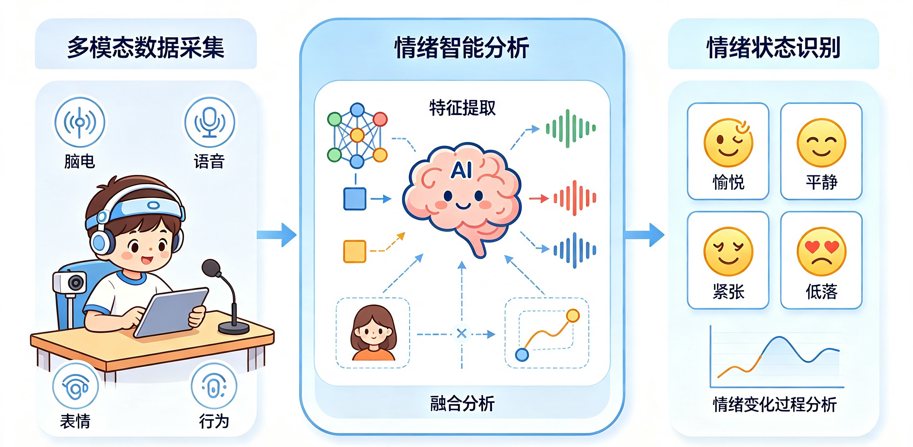
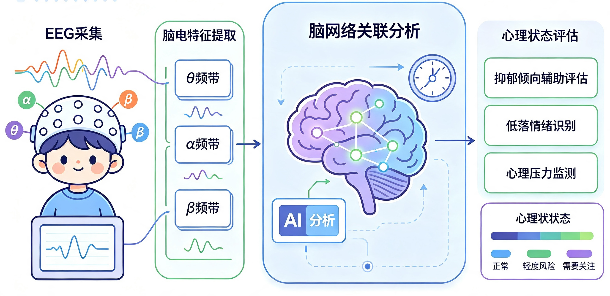
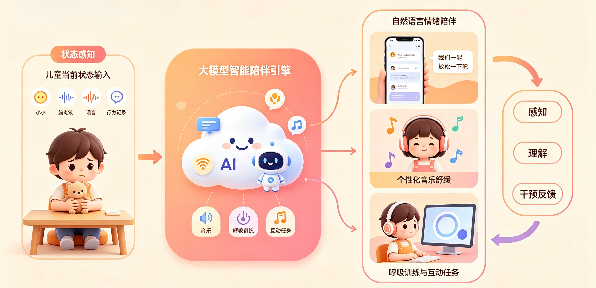

从“情绪识别”到“智能干预”的闭环支持，守护儿童青少年心灵成长
儿童青少年心理健康问题呈现出隐蔽性强、主观表达不足、早期识别困难等特点。传统心理评估主要依赖量表测评和人工访谈，难以实现连续化、客观化和智能化监测。
本项目面向儿童青少年情绪障碍、抑郁倾向及心理压力状态评估需求，构建融合脑电信号、语音、面部表情、行为交互等多模态信息的智能情绪计算与干预平台。



形成面向儿童心理健康场景的：